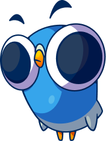

Behavioral Anti-Cheat
Pijon helps game studios identify cheating through behavioral analysis instead of traditional signature-based detection. Built for mobile. Affordable for independent developers.

Detect suspicious gameplay patterns instead of relying on known cheat signatures.
Clear explanations and confidence scores instead of black-box decisions.
Enterprise-inspired technology with pricing designed for smaller development teams.
Traditional anti-cheat solutions focus on detecting cheat software. Pijon focuses on detecting impossible behavior. By analyzing gameplay patterns over time, developers gain meaningful insights while staying in control of moderation decisions.